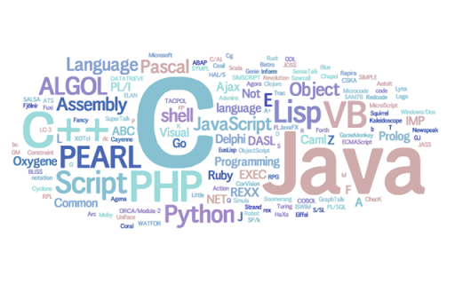

A programming language is a vocabulary and set of grammatical rules for instructing a computer or computing device to perform specific tasks. The term programming language usually refers to high-level languages, such as BASIC, C, C++, COBOL, Java, FORTRAN, Ada, and Pascal. Each programming language has a unique set of keywords (words that it understands) and a special syntax for organizing program instructions.
